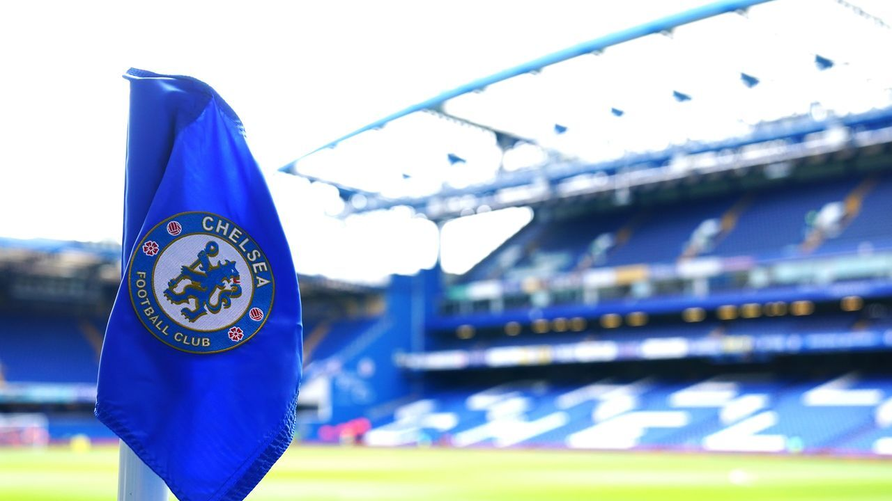

foot Ball Club In England
Chelsea Football Club is an English professional football club based in Fulham, West London. Founded in 1905, they play their home games at Stamford Bridge.[5] The club competes in the Premier League, the top division of English football. They won their first major honour, the League championship, in 1955. The club won the FA Cup for the first time in 1970, their first European honour, the Cup Winners' Cup, in 1971, and became the third English club to win the Club World Cup in 2022. Chelsea are one of five clubs to have won all three pre-1999 main European club competitions, and the only club to have won all three major European competitions twice. They are also the only London club to have won the Champions League and the Club World Cup.[6] Domestically, the club has won six league titles, eight FA Cups, five League Cups, and four FA Community Shields. Internationally, they have won the UEFA Champions League, the UEFA Europa League, the UEFA Cup Winners' Cup and the UEFA Super Cup twice each, and the FIFA Club World Cup once since their inception. In terms of overall trophies won, Chelsea are the fourth-most successful club in English football. The club has rivalries with neighbouring teams Arsenal and Tottenham Hotspur, and a historic rivalry with Leeds United. In terms of club value, Chelsea is the eighth-most-valuable football club in the world (as of 2022), worth $3.10 billion, and is the eighth-highest-earning football club in the world
Top 10 Recored Transfers
| Kaleb | Rami |